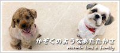
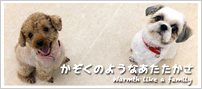

卒業生のみなさんへ
みなさんの仕事場を紹介してみませんか？
仕事場の情報を載せてプロモーションのひとつとして活用してみてください。
掲載に関しての申し込み、お問い合わせは、下記のTELまでお電話ください。
もしくはメールにてお問い合わせください。
フリーダイヤル：0120-141-807／E-mail：info@osaka-eco.ac.jp
DOG-ZERO
犬の幼稚園 アットホーム
 

アットホームは、わんちゃんと飼い主様が、楽しく幸せに暮らせるように、家族のようにいつでも対応したいという思いで始めました。
一頭一頭の個性を大事し、楽しく遊びながらトレーニングを行います。
問題行動もいい所を見つけて解決していきます。
よく、幼稚園ではできるけど、家に帰ると…というわんちゃんがいますが、一人一人、一頭一頭、家族のように親身になってお話聞かせて頂きます。
たまには、わんちゃん以外の話もして（笑）
コミュニケーションをとりながらサポートさせて頂きます♪
- ■所在地
- 〒662-0034
兵庫県西宮市西田町 1-7 - ■代表
- 田中大二郎
（ECOドッグトレーナー専攻卒業） - ■TEL
- 0798-20-4877
- ■携帯
- 080-5354-4551
- ■FAX
- 0798-20-4877
- athome.dog@gmail.com
- ■アクセス
-
【1】電車でお越しの場合
・阪急 夙川駅 徒歩10分
・JR さくら夙川駅 徒歩10分
【2】お車でお越しの方
・2号線より、171号線に入り
阪急電車高架下すぐ手前の一方通行路地を、左折
一旦停止後、右折。高架をくぐり右折
すぐ右手に共同駐車場があります。そこより171号線方面に、徒歩1分 - ■WEBサイト
- http://dogzero.web.fc2.com/
- ■ブログ
- http://dogzero.blog109.fc2.com/
- @DOG_ZERO
- ■レッスン
内容 - 出張訓練,しつけ相談,預かり訓練,デイケア,幼稚園・保育園
- ■備考
- ワンちゃんをしっかり見てあげるため1日の頭数制限有 お越しの場合は必ず事前連絡をお願いします。
- ■出張可能
エリア - 西宮（全域）・三田（一部）・神戸市北区（一部）神戸市灘区（一部）・神戸市東灘区（一部）神戸市中央区（一部）宝塚（一部）・芦屋（全域）・伊丹（一部）尼崎（一部）・大阪（一部）
- ■訓練種別
- 家庭犬のしつけ,アジリティー,ショードッグ,ドッグダンス
- ■その他
サービス - 自宅への送迎,ドッグホテル(宿泊),一時預かり(日帰り),ドッグシッター・散歩代行,老犬介護,ペットグッズ販売
- ■その他
アピールポイント - TV出演や専門学校講師経験もあるドッグトレーナーがワンちゃんと飼い主様の事を考えて一人一人を親身に対応して、家族のようなあたたかさでお迎えします。お気軽にお問い合わせ下さい☆